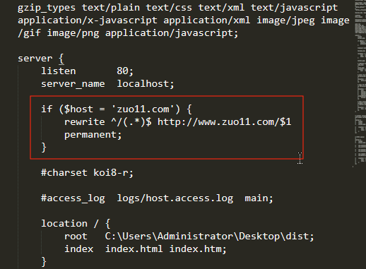

2020/02/08
Author: guoqzuo
nginx访问不带www的域名，自动切到www
在seo时，搜索引擎可能会将 xx.com 和 www.xx.com 一起收录。这里需要进行处理，当使用一级域名直接访问时(xx.com)，自动切到 www.xx.com ，下面来看看怎么配置nginx
# 修改nginx配置，加入如下转换
if ($host = 'zuo11.com') {
rewrite ^/(.*)$ http://www.zuo11.com/$1 permanent;
}如下图

测试是否生效
# 打开浏览器的console，测试是否有转换成功
location.host # zuo11.com 或 www.zuo11.com参考：